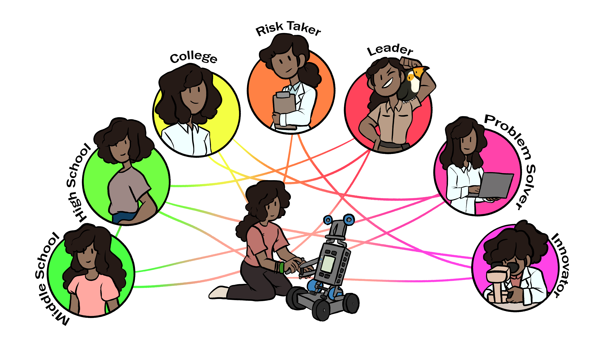
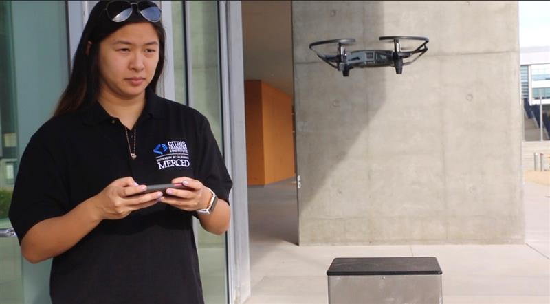

Going beyond the classroom with NexTech Robotics
With the growing need to enhance STEM beyond the classroom, UC Merced engineering students have created a program to solve this need for middle school students. The program brings innovative and fun tech curriculum o middle school students to programing, develops a sense of identity in STEM, and encourages cooperative group problem-solving. UC Merced students take on the role of NexTech educators and guide the middle school students through building several versions of robotsand puzzles. Students can see themselves succeeding in technology after exploring NexTech Robotics.
Robotics in middle school opens STEM pathways to exciting careers! (Illustration:M. Martinez)
Support NexTech
- Apply to be a NexTech Educator (position open until 12/1/2020)
- Host a NexTech course at your school: email CITRIS at citris@ucmerced.edu
- Join the email list for future NexTech Online: email CITRIS at citris@ucmerced.edu
-
Donate to expand NexTech to more San Joaquin Valley students:
Please consider sponsoring another location. We are limited by Vex IQ Kits and educator interns employees.
Karishma Singh builds one of the VexIQ robots that will be used for a demo in the NexTech middle school afterschool program.
What is NexTech
CITRIS @ UC Merced’s innovative computer science and robotics program has been serving San Joaquin Valley middle school students since 2016. Developed by a UC Merced undergraduate student, NexTech Robotics engages every kind of computer scientist, from logic-based programming to wireless control. Students work independently and in teams to develop computational thinking. Through in-class and after-school sessions NexTech students practice scratch and block coding, learn about sensors, run competitive courses, and solve problems.
CITRIS NexTech Education interns—undergraduate students majoring in Computer Science and Engineering—serve as near-peers who bring an element of fun. The interns over time have added units on drones and unmanned aerial systems (UASs); HTML code to make websites; general engineering concepts; and more.
California needs teachers, especially in STEM fields. UC Merced’s CalTeach program trains teachersin natural sciences and math, and the UCsystemcontributes over 5% of credentialed teachers to the professioneach year. But many undergraduate students don’t realize their potential in education. NexTech affords multiple students an opportunity to try teachingwith real students. Many of them continue. By working in pairs, they learn pedagogical tools, classroommanagement, and how to create engaging curriculum. We hireNexTecheducators who can inspire students to see themselves in computer science, STEM and higher education.
CITRIS offers NexTech in several formats with plans to expand outreach. NexTech in thepast served Tenaya, Cruickshank and HooverMiddle Schools through in-class and after-school programs lasting 6-10 weeks. When the COVID-19 shelter-in-place took effect, NexTech went online usingweb-basedemulators instead of the physical robots. We plan to expand to serve online and weekends as well as gobeyond Merced-city schoolsby adding new locations when possible.

Students work on building one of three robot versions to compete as teams in programming challenges.
Why middle school robotics
Robots are fun, creative and present multi-dimensional problems that translate into engineering, math and computer science skills. They’re also a gateway to engage many student interestsand skills.
A leading issue in the San Joaquin valley is the ability for low-income students to explore STEM (science, technology, engineering and mathematics) beyond the typical classroom setting. This program was designed to change how students see themselves in STEM and how they think about problems, logic, and computers.The region’s population is also considered historically underrepresented in STEM education and technology careers. By interveningin middle school--when young women tend toopt-out of STEM and when students are developing their occupational identity—NexTechenables mentoring from near-peers, develops teamwork, and creates lasting connections among students who might otherwise not have classes together.
CITRIS at UC Merced encouragesunderrepresented studentstofind their path in STEM and pursue higher education. NexTech is onesteptoward access and achievement in STEM,sharing the excitement of two UC Merced students and the NexTech Robotics fun in San Joaquin Valley middle schools.
Ivy Nguyen (Computer Science and Engineering, Class of 2021) shared a passion for teaching, drones and unmanned aerial systems with middle students. (Photo: Ryan Xayarath)